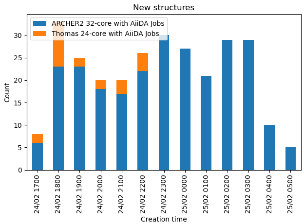

Manage the search
Monitor throughput
The easiest way to see how the search is going is to use the disp db throughput command.
It will show a bar chart of the number of new structure per hour, and it is possible to controll what the counts are grouped with
disp db throughput -g worker_name

Check progress
Use disp db summary --project <project_name> to check how many structure has been relaxed for the particular project(s).
The <project_name> field is an regular expression to be used for matching.
It is also possible to use --seed to further select certain seed names.
In addition, to the number of structure generated, it will also show how many workflows for each seed has been completed or ready to run.
Example
$ disp db summary --project LFP
Structure WF count - search
RES Init ARCHIVED DEFUSED FIZZLED ALL
project seed
catdisc/LFP/with-u-rerun 2LFP 663 816 792.0 1.0 7.0 800.0
4LFP 972 1200 1200.0 0.0 0.0 1200.0
catdisc/LFP/without-u-rerun 2LFP 762 800 800.0 0.0 0.0 800.0
4LFP 1157 1200 1200.0 0.0 0.0 1200.0
$ disp db summary --project LFP --per-project
Structure WF count - search
RES Init ARCHIVED DEFUSED FIZZLED ALL
project
catdisc/LFP/with-u-rerun 2383 2995 2936.0 1001.0 63.0 4000.0
catdisc/LFP/without-u-rerun 2838 3117 2977.0 1000.0 23.0 4000.0
Prioritize certain tasks
Priority of the tasks (Firework) can be modified with lpad interface.
The following command can be used to change the priority of project catdisc/LFP.
lpad updates_fws -q '{"spec.project_name": "catdisc/LFP", "state":"READY"} -u '{"_priority": 100}'
Note
Unfinished relaxations (e.g. restarts) will have increase priority over new structures.
Cancel searches
A search can be cancelled/paused by defuse/pause relavant tasks.
This may be achieved with the lpad interface.
lpad defuse_fws -q '{"spec.project_name": "catdisc/LFP", "state":"READY"}
and
lpad pause_fws -q '{"spec.project_name": "catdisc/LFP", "state":"READY"}
for pausing jobs.
Note
Due to the limitation of fireworks, pausing/defusing a large number of jobs can take a long time and no progress is reported.
A modified version of fireworks can be used to include process report (here).
Failure handling/lost runs
CASTEP relaxations are usually fairly robust and you should not see consistent DFT errors. Due to the nature of the random structure, it is not rare that certain relaxation would errors. Since it is random sampling, having randomly failed calculation should not affect the results.
However, in some cases, especially systems with spin-polarisation and requires Hubbard U correction, CASTEP may struggle to converge the electronic structure for ill-form input structures. You will see that the number of relaxed structure being much fewer than that of the initial structures, despite relaxation workflow being in the "COMPLETED" states, which is for the purpose of workflow management only.
To access the actual relaxation output, one has to dig into the stored_data of the associated launch,
then check the launch directory of those in the ERRORED state.
Lost runs
Due to the server-client architecture of the workflow system. The client may lose content with the server, causing the jobs checked out to be staled. This is, unfortunately, irrecoverable, and the only solution is to rerun the lost task.
This can be done with:
lpad detect_lostruns --rerun
since the necessary information to start a new CASTEP calculation is already stored on the server.